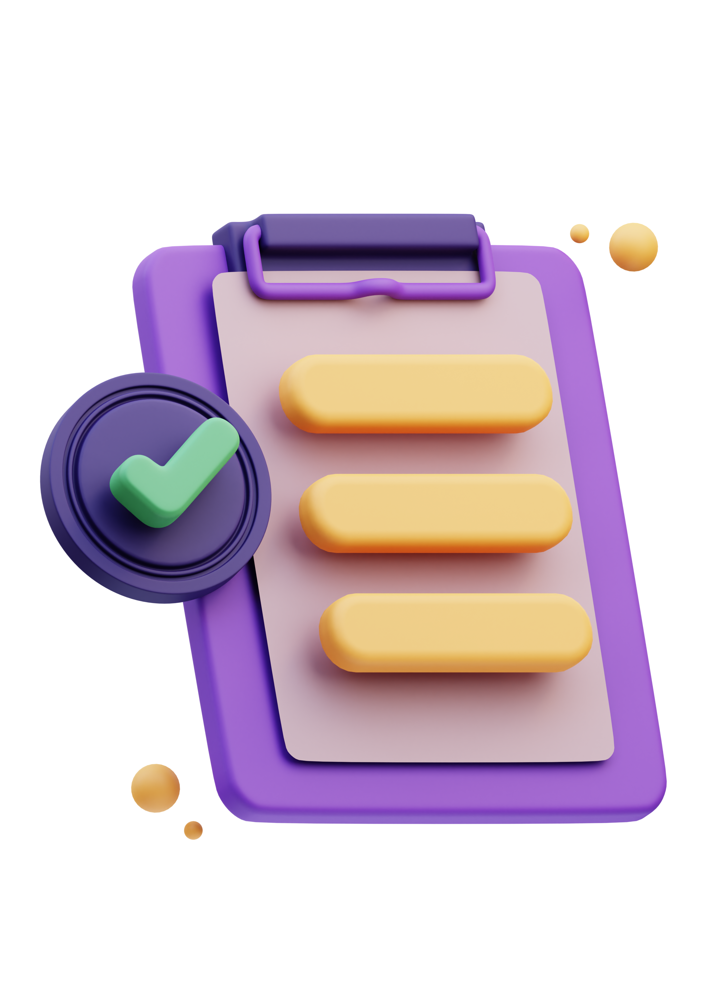

During this term, I got to learn about HTML and CSS and apply here on this website to the fullest I can. Although the journey I started was hard, it was fun and creative at some parts. It was really fun while learning all these and I got chance to sharp my skill.
As I progressed, I delved deeper into coding and debugging. I encountered various issues, from broken links to layout problems. Debugging these issues taught me patience and attention to detail.
Designing the user interface was both fun and challenging. I experimented with different fonts and color schemes, aiming for a clean and modern look. Influenced by various websites, the choices were critical for readability and appeal.
Reflecting on my module experience, I realize how much I have grown as a developer. I faced many ups and downs, from the excitement of creating my first webpage to the frustration of fixing persistent bugs.
Over the term, my website evolved significantly. Starting with a basic layout, I gradually added features, improving both functionality and design, and focusing on user feedback for better user experience.
I ensured that my website's HTML and CSS validated correctly. These validation reports confirm that my code meets the required standards. You can view the video demonstration here.